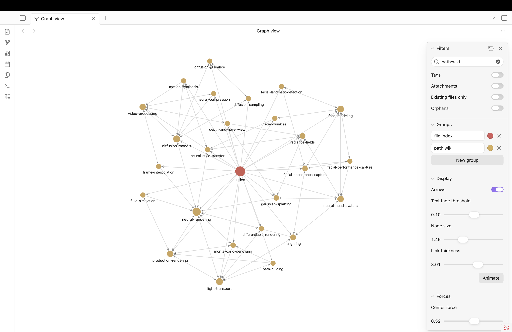
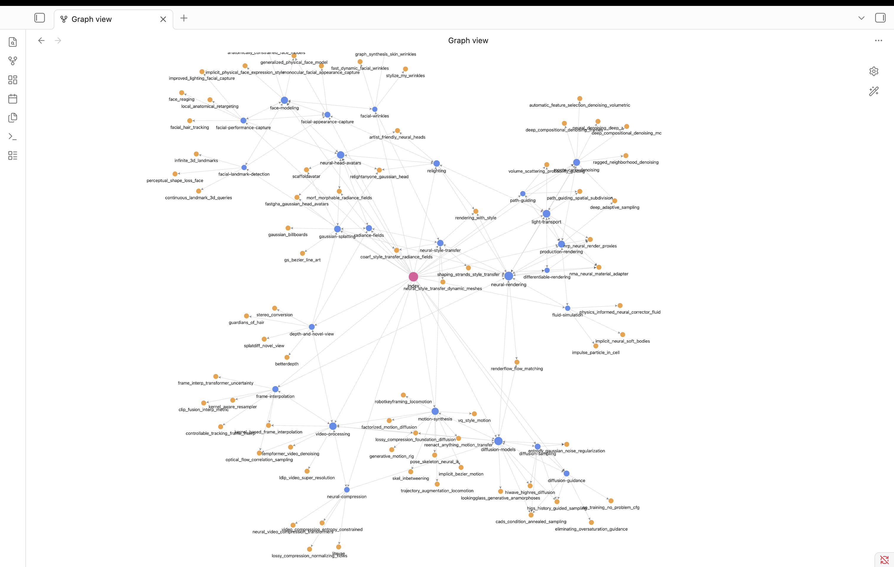

마무리
네 시간의 결과
수업이 끝나도 그대로 쓸 수 있는 작업 환경
내 관심 주제로 만든 개념 문서들
끊긴 링크 0, 연결 안 된 문서 0을 통과한 연결망
모을 때 정리해 두면 왜 유리한지 설명할 수 있는 근거
같은 폴더가 이렇게 자랍니다

자료 8건 → 개념 문서 25개. 오늘 여러분이 만든 것과 같은 규모입니다.

최근에 사용 중인 저의 위키 모습입니다.
폴더를 안전한 곳에 둡니다
오늘 만든 위키는 내 컴퓨터의 폴더에 있습니다. 폴더만 챙기면 그대로 이어집니다.
- 폴더를 통째로 복사해 둡니다
클라우드 드라이브나 외장 디스크에 폴더째 넣어 두면 그대로 백업이 됩니다.
- 다른 컴퓨터에서 이어 하려면 폴더만 옮깁니다
옮긴 곳에서 Claude 앱으로 그 폴더를 열고, Obsidian으로도 같은 폴더를 열면 이어집니다.
- GitHub에 올려 두면 이력까지 남습니다
여유가 되면 해 볼 만합니다. 언제 무엇이 바뀌었는지 되짚을 수 있습니다.
수업 뒤에는 이 셋을 반복합니다
- 좋은 글을 보면 클리핑
웹 클리퍼 버튼 한 번이면 raw/에 쌓입니다.
- 가끔 정리 실행
"raw 읽어서 위키로 정리해 줘" — 쌓인 자료가 개념으로 묶입니다.
- 막히면 내 위키에 질문
"내 위키 근거로 설명해 줘" — 출처 달린 답이 다시 쌓입니다.
오늘 다룬 것의 원문
| 무엇 | 왜 볼 만한가 |
|---|---|
| Karpathy의 메모 | 3계층과 3작업이 나온 원문. 한 페이지 분량입니다. gist.github.com/karpathy |
| Google OKF 규격 | 필수 항목이 type 하나뿐인 이유와 항목을 추가해도 되는 근거. github.com/GoogleCloudPlatform/knowledge-catalog |
| 한국어로 읽기 | OKF를 우리말로 정리한 글. 영어가 부담되면 여기부터. discuss.pytorch.kr |
| 실습 저장소 | 스킬, 예제, 점검 도구. github.com/modulabs/okf-wiki-starter |
| OpenWiki | 오늘 만든 구조를 코드 저장소에 적용한 오픈소스 도구. github.com/langchain-ai/openwiki |
| 더 알아보기 | RAG 내부 동작, OKF 규격 상세, 지식 그래프를 정리해 둔 참고 자료 |
다음에 해볼 만한 것
내 스킬 만들기
okf-wiki를 복사해 용도별로 고칩니다. 논문 정리용, 회의록 정리용.
프론트매터로 모아 보기
Dataview로 type이 같은 문서를 한 목록으로 뽑습니다.
PDF와 논문 넣기
PDF, 강의 노트, 회의록도 raw/에 넣습니다. 형식이 달라도 정리 방식은 같습니다.
위키를 웹에 올리기
GitHub에 올리면 그대로 웹 문서가 됩니다. 스터디나 동아리에서 함께 씁니다.
정기 점검 걸어 두기
주에 한 번 점검이 자동으로 돌게 하면 위키가 방치되지 않습니다.
다른 도구와 잇기
참고문헌 도구나 메모 앱의 자료도 raw/로 모읍니다.
같은 구조를 AI에게 읽히는 방향
코드를 사람 대신 AI가 쓰는 일이 늘면서, AI가 읽을 문서를 따로 만드는 도구가 나오고 있습니다. LangChain이 공개한 OpenWiki가 그런 사례입니다 — 프론트매터, 목차 파일, 변경 기록, 문서 사이의 링크까지 오늘 만든 것과 같은 구조입니다.